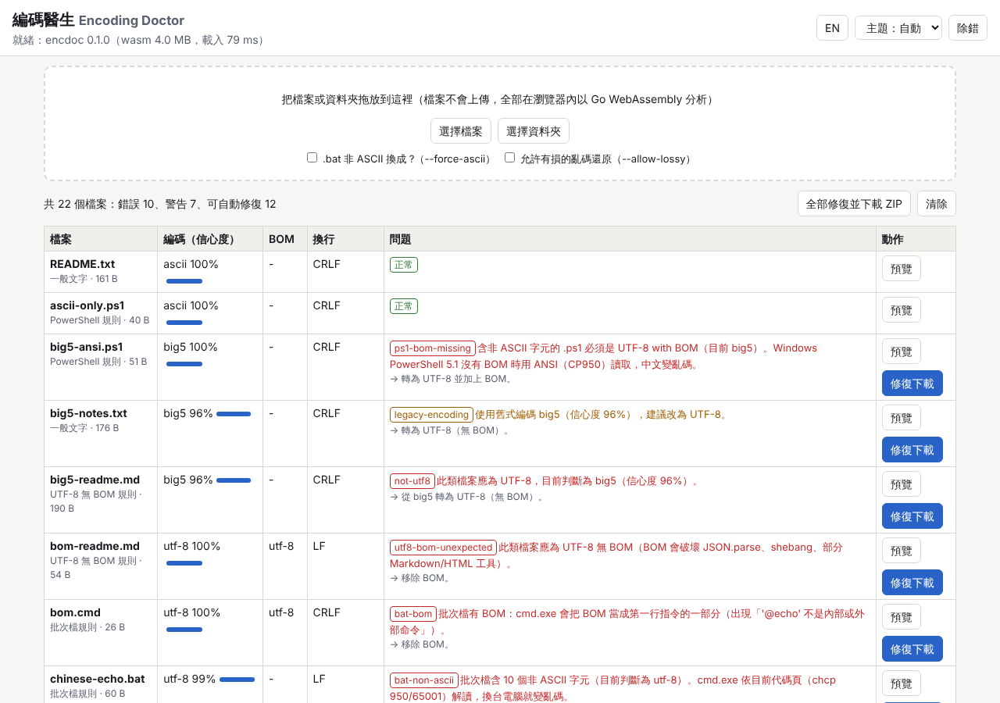
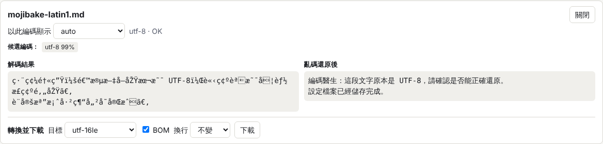
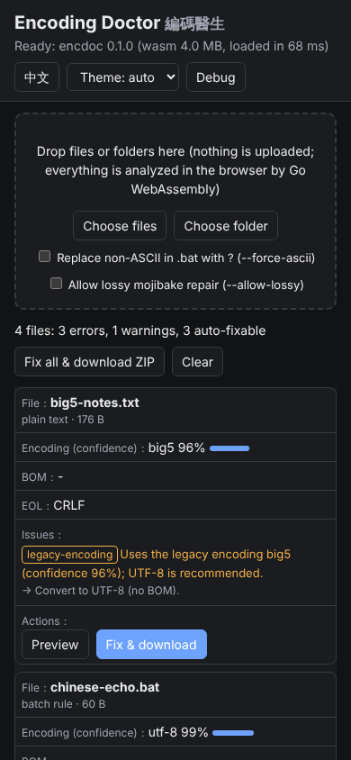

概覽
在繁體中文 Windows 上，最常見的編碼問題是：舊檔是 Big5（CP950）、新檔是 UTF-8；.bat 混入中文後換台電腦就亂碼；.ps1 沒有 BOM 時 Windows PowerShell 5.1 把中文讀成亂碼；CRLF / LF 混用；或 UTF-8 被誤當 ANSI 開啟又存檔造成的「亂碼」。編碼醫生把這些檢查與修復集中在一個工具裡。
- 編碼偵測：BOM（UTF-8 / UTF-16LE / UTF-16BE）、UTF-8 是否有效、無 BOM 的 UTF-16、Big5/CP950、GBK、Shift_JIS、Windows-1252，附信心度與候選清單（依常用字頻率評分）。
- 檢查：換行統計（CRLF / LF / CR / 混用）、U+FFFD 取代字元、NUL 位元組、無效位元組序列、亂碼（mojibake）偵測。
- 亂碼還原：嘗試反向轉換「UTF-8 被誤讀為 Windows-1252 / Big5 / GBK / Shift_JIS 後再存檔」，以中日文可讀性評分選出最佳結果；Windows-1252 類可完整還原，Big5 類通常有損（會標示）。
- 依檔案類型的規則（你的規範）：
.bat/.cmd→ ASCII + CRLF；.ps1→ 有非 ASCII 時 UTF-8 with BOM；.md/.json/.js/.html等 → UTF-8 無 BOM；.sh→ LF。違規會附建議修法，可一鍵修復。 - 轉換：任意支援編碼互轉、加 / 移除 BOM、統一換行。
- 兩種介面、同一份 Go 程式碼：
- 瀏覽器介面（
GOOS=js GOARCH=wasm）：拖放檔案或資料夾、診斷表、以指定編碼預覽、一鍵修復下載、全部修復打包 ZIP。zh-TW / English、淺色 / 深色、手機寬度可用。檔案不會上傳。 - 原生 CLI
encdoc：遞迴掃描、--fix預設只預覽、--apply才寫入並保留.bak、JSON 輸出、convert子命令。可交叉編譯 Windows exe。
- 瀏覽器介面（

| 產物 | 大小 | 說明 |
|---|---|---|
web/encdoc.wasm | 約 4.0 MB（gzip 約 1.3 MB） | 標準 Go 1.24 編譯（-ldflags=-s -w），已提交到 repo（< 5 MB），沒有 Go 也能直接開 UI。 |
bin/encdoc / bin/encdoc.exe | 約 2.4 / 2.5 MB | 不提交（.gitignore），用 build-windows.bat 或 build.sh 產生。 |
快速開始
Windows（繁體中文 Windows）
- 安裝 Node.js 18 以上（只用來跑本機靜態伺服器）。要建置 CLI 或重新編譯 wasm 時再安裝 Go 1.24 以上。
- 瀏覽器介面：雙擊
start-windows.bat。它會切換到程式資料夾、印出路徑、呼叫start-windows.ps1，啟動node server.js --open並開啟http://127.0.0.1:8706/。結束時印出結束代碼並暫停。 - CLI：先雙擊
build-windows.bat（產生bin\encdoc.exe，需要 Go），再雙擊encdoc-scan.bat：它會問要掃描的資料夾（直接 Enter =testdata）並執行--fix預覽（不寫入）。也可以在命令列：encdoc-scan.bat D:\work\scripts --fix --apply。
參數：start-windows.ps1 -Port 9000 -LogDir D:\logs -NoBrowser；build-windows.ps1 -Test 建置後順便跑 Go 測試與 CLI 測試。
Linux / macOS
./start.sh # 或 node server.js --open → http://127.0.0.1:8706/ ./build.sh # = node scripts/build.mjs --windows：wasm + bin/encdoc + bin/encdoc.exe ./bin/encdoc testdata # 掃描範例檔 npm test # 建置 + go test + CLI 驗證 + Playwright e2e
Go 不在 PATH 時，建置腳本會嘗試 /usr/local/go/bin/go，或用環境變數 GO=/path/to/go 指定。
使用說明
瀏覽器介面
- 把檔案或整個資料夾拖放到虛線框，或按「選擇檔案」/「選擇資料夾」。資料夾模式只收已知文字副檔名，略過
.git、node_modules與 > 20 MB 的檔案。 - 診斷表每列：檔名與套用的規則、偵測編碼與信心度條、BOM、換行、問題（紅 = 錯誤、橘 = 警告；每個問題附「→ 建議修法」）、動作按鈕。
- 「預覽」：以 auto 或任一編碼解碼顯示，列出候選編碼與分數（滑鼠移到候選上看樣本）。若偵測到亂碼，右側同時顯示「亂碼還原後」。下方「轉換並下載」可指定目標編碼、BOM、換行。
- 「修復下載」：依規則修復後下載同名檔案。「全部修復並下載 ZIP」：所有有變更的檔案打包成
encdoc-fixed.zip（保留資料夾相對路徑）。 - 選項：「.bat 非 ASCII 換成 ?」與「允許有損的亂碼還原」對應 CLI 的
--force-ascii、--allow-lossy。 - 右上角：EN / 中文 切換（記在 localStorage，也可用
?lang=en）、主題（自動 / 淺色 / 深色）、除錯面板。

CLI：encdoc
encdoc [options] [path ...] 掃描（預設 "."，遞迴） encdoc --fix [options] [path ...] 預覽修復（dry run，不寫入） encdoc --fix --apply [options] [path ...] 寫入修復（原檔保留為 *.bak） encdoc convert --from big5 --to utf-8 [--bom] [--eol crlf|lf] IN OUT encdoc version
| 選項 | 說明 |
|---|---|
--json | JSON 輸出（每檔完整 report、fix 計畫與 summary）。 |
--all | 也檢查未知副檔名（預設只看已知文字類型）。 |
--encoding NAME | 強制來源編碼：utf-8、big5（cp950）、gbk（cp936）、shift_jis（cp932）、windows-1252、utf-16le、utf-16be、ascii。 |
--force-ascii | .bat 的非 ASCII 字元換成 ?（預設不自動改，因為會遺失內容）。 |
--allow-lossy | 套用會遺失字元的亂碼還原（例如 Big5 類）。 |
--no-backup | --apply 時不留 .bak。 |
--exclude a,b | 略過的資料夾名稱（預設 .git,node_modules）。 |
--lang zh|en | 訊息語言，預設 zh。 |
--debug / --log-dir DIR | 見「除錯與日誌」。 |
結束代碼：0 沒有錯誤、1 有錯誤（適合 CI / pre-commit）、2 用法或 I/O 錯誤。
encdoc --fix --lang en testdata
...
[FAIL] testdata/no-bom.ps1 utf-8 99% - CRLF
- error ps1-bom-missing [fixable]: .ps1 with non-ASCII text must be UTF-8 with BOM (now utf-8). ...
>> would change: added utf-8 BOM (66 -> 69 bytes, errors after: 0)
files 22, errors 10, warnings 7, fixable 12; dry run: 12 files would change (add --apply to write).
規則與問題代碼
| 代碼 | 適用 | 意義 / 自動修復 |
|---|---|---|
bat-non-ascii | .bat .cmd | 含非 ASCII 字元。只有 --force-ascii 才自動處理（換成 ?）；建議把中文訊息移到 .ps1。 |
bat-eol / bat-bom | .bat .cmd | 必須 CRLF、不可有 BOM。可自動修復。 |
ps1-bom-missing / ps1-utf16 | .ps1 .psm1 .psd1 | 有非 ASCII 時需 UTF-8 with BOM。自動轉換（Big5 來源也會先正確解碼）。 |
utf8-bom-unexpected / not-utf8 | .md .json .js .mjs .cjs .ts .html .htm .css .svg .jsonl | 必須 UTF-8 無 BOM。自動移除 BOM / 轉 UTF-8。 |
sh-eol | .sh | 必須 LF。 |
legacy-encoding | .txt .csv .xml .yml .ini .py .go ... | 舊式編碼，建議轉 UTF-8（警告，可自動）。 |
mixed-eol | 所有文字檔 | 換行混用，統一成多數的那一種。 |
mojibake | 所有文字檔 | 疑似亂碼；無損時可自動還原，有損需 --allow-lossy。 |
invalid-utf8、decode-errors、replacement-char、nul-bytes、low-confidence | 所有文字檔 | 資料已遺失或無法確定，只報告、不自動修。 |
編碼知識速查
| 項目 | 重點 |
|---|---|
| BOM 位元組 | UTF-8：EF BB BF；UTF-16LE：FF FE；UTF-16BE：FE FF；UTF-32LE：FF FE 00 00（本工具不處理 UTF-32）。BOM 是 U+FEFF 以該編碼寫出的結果。 |
| CP950 vs Big5 | Big5 是 1984 年的業界標準，各家擴充不同。CP950 是微軟版 Big5（繁中 Windows 的「ANSI」），多了少數字元（例如 A3E1 歐元符號、F9D6–F9FE 倚天擴充字與框線）。Big5-HKSCS 是香港擴充。Go 的 x/text 使用 WHATWG Big5 表（涵蓋 CP950 常用部分與 HKSCS），本工具把 big5 與 cp950 視為同一個選項。 |
| 為什麼 .bat 要純 ASCII | cmd.exe 依「目前代碼頁」逐位元組讀批次檔：繁中 Windows 預設 chcp 950，有人設成 chcp 65001（UTF-8）時 Big5 中文就壞；反之 UTF-8 中文在 950 下也壞，甚至讓多位元組字吃掉後面的引號或換行，造成指令錯亂。UTF-8 BOM 則會變成第一行指令的一部分（'@echo' 不是內部或外部命令）。LF 換行會讓 goto / call :label 在某些情況找不到標籤。結論：.bat 只放 ASCII + CRLF，中文訊息交給 .ps1。 |
| PowerShell 5.1 與 BOM | Windows PowerShell 5.1 讀沒有 BOM 的腳本時使用系統 ANSI 代碼頁（繁中為 CP950），所以 UTF-8 無 BOM 的中文字串會變亂碼，甚至造成語法錯誤（引號被吃掉）。加上 UTF-8 BOM 即可。PowerShell 7+ 預設 UTF-8，無 BOM 也正確，但有 BOM 也沒問題，因此 UTF-8 with BOM 是兩邊都安全的選擇。 |
chcp 65001 | 把主控台代碼頁改成 UTF-8，影響之後 cmd 讀批次檔與程式輸出的解讀。在批次檔中途切換可能讓已讀取的行與後續行解讀不一致；舊版主控台字型也可能顯示不了。本專案的 .ps1 改用 [Console]::OutputEncoding = UTF8，不靠 chcp。 |
| CRLF / LF | Windows 慣例 CRLF（0D 0A），Unix 為 LF（0A），舊 Mac 為 CR。.sh 有 CRLF 會出現 $'\r': command not found。Git 的 core.autocrlf 與 .gitattributes 也會改換行。 |
| U+FFFD「�」 | 解碼失敗時的取代字元。一旦存檔，原始位元組就沒了，無法還原，只能找備份。 |
| 常見亂碼長相 | UTF-8 被當 Windows-1252：編碼、é、’（可完整還原）。UTF-8 被當 CP950：蝺函Ⅳ、銝剜?（部分位元組遺失）。Big5 被當 UTF-8：滿滿的 �（無法還原）。 |
逐步驗證指南
以下每一步都附預期結果。testdata/ 是由 cmd/gentestdata 產生的「故意壞掉」的範例檔（位元組精確、可重現）。
A. 一鍵自動驗證
npm test（Windows 也可build-windows.bat後執行build-windows.ps1 -Test）。
預期：Go 測試ok encdoc/encdoc；CLI 驗證最後一行all CLI checks passed；e2e 最後一行all e2e checks passed，並更新examples/三張截圖。
B. CLI 手動驗證
bin/encdoc testdata（Windows：bin\encdoc.exe testdata）。
預期：22 個檔案；big5-notes.txt判為big5 96%；gbk-simplified.txt為 gbk；sjis-japanese.txt為 shift_jis；testdata/no-bom.ps1出現ps1-bom-missing；testdata/chinese-echo.bat出現bat-non-ascii與bat-eol；bom-readme.md出現utf8-bom-unexpected；mojibake-latin1.md出現mojibake並顯示還原樣本「編碼醫生：這段文字原本是 UTF-8…」；最後一行「錯誤 10，警告 7，可自動修復 12」；結束代碼 1。- 複製一份：
cp -r testdata /tmp/td（Windows：xcopy testdata %TEMP%\td\ /E），執行bin/encdoc --fix /tmp/td。
預期：每個可修檔案顯示>> 預計修改: ...，最後「預覽模式：12 個檔案會被修改」，檔案內容完全沒變。 bin/encdoc --fix --apply --force-ascii --allow-lossy /tmp/td，再執行bin/encdoc /tmp/td。
預期：第二次掃描「錯誤 0、可自動修復 0」，結束代碼 0；只剩 3 個無法自動修的警告（lost-fffd.txt與mojibake-cp950.txt的 U+FFFD、nul-bytes.txt）。/tmp/td/no-bom.ps1開頭變成EF BB BF，原檔保留為/tmp/td/no-bom.ps1.bak。bin/encdoc convert --from big5 --to utf-8 --bom --eol lf testdata/big5-notes.txt /tmp/out.txt。
預期：... (254 bytes, lost 0)，/tmp/out.txt開頭為 UTF-8 BOM、內容為「編碼醫生測試檔案」。bin/encdoc --json testdata可直接用 jq / PowerShellConvertFrom-Json處理。
C. 瀏覽器介面手動驗證
- 執行
start-windows.bat（或./start.sh）。預期：瀏覽器開啟，右上狀態顯示「就緒：encdoc 0.1.0（wasm 4.0 MB …）」。 - 把整個
testdata資料夾拖進虛線框。預期：出現 22 列（與 CLI 結果相同），摘要「共 22 個檔案：錯誤 10、警告 7、可自動修復 12」。 - 在
big5-notes.txt按「預覽」，把編碼改為 utf-8。預期：中文變成 �；改回 big5 或 auto 顯示正常中文。 - 在
testdata/no-bom.ps1按「修復下載」。預期：下載的檔案以EF BB BF開頭，其餘位元組與原檔相同。 - 按「全部修復並下載 ZIP」。預期：下載
encdoc-fixed.zip，內含 12 個修復後的檔案。 - 按 EN。預期：介面與問題訊息都變英文。調整視窗到手機寬度，表格變成卡片、沒有水平捲動。

開發者指南
架構
encdoc/ 核心套件（純 Go，無 cgo；CLI 與 wasm 共用） codec.go 編碼名稱/別名、Decode/Encode（含自製無損 Windows-1252 表）、BOM detect.go Detect：BOM → UTF-16 零位元組樣式 → 二進位判斷 → ASCII → UTF-8 → 舊式編碼評分 score.go 可讀性評分：常用繁/簡/日字表、假名、標點；PUA、半形片假名、C1 控制碼扣分 mojibake.go 亂碼偵測與反向轉換（含 Big5 缺位元組推測） eol.go 換行統計與統一 rules.go 檔案類型規則、Analyze（Report/Issue）、Fix、Convert encdoc_test.go 表格式測試（使用 testdata/） cmd/encdoc/ 原生 CLI cmd/wasm/ syscall/js 橋接（GOOS=js GOARCH=wasm） cmd/gentestdata/ 產生 testdata/ 範例檔 web/ index.html、app.js、style.css、encdoc.wasm、wasm_exec.js（從 GOROOT 複製） server.js 零相依靜態伺服器（application/wasm MIME、JSONL 請求記錄） scripts/build.mjs 建置 wasm / CLI / Windows exe；scripts/go.mjs 尋找 go 執行檔 test/cli.mjs CLI 驗證；test/e2e.mjs Playwright 端對端測試
Go ↔ JS 橋接
cmd/wasm/main.go 把 globalThis.encdoc 設成一個物件，然後 select{} 讓 Go runtime 常駐。位元組以 Uint8Array 傳遞（js.CopyBytesToGo / js.CopyBytesToJS），結構化結果以 JSON 字串傳回，避免逐欄位建立 JS 物件。每個函式都包在 guard() 裡，Go panic 會變成 {error} 而不是讓整個 runtime 結束。載入完成時呼叫 window.__encdocReady()。
| 函式 | 回傳 |
|---|---|
encdoc.analyze(name, u8, optsJSON) | Report JSON 字串 |
encdoc.fix(name, u8, optsJSON) | {json, bytes} |
encdoc.decode(u8, encoding) | {text, invalid, bom, encoding} |
encdoc.convert(u8, optsJSON) | {bytes, lost} 或 {error} |
encdoc.zip(names, u8s) | ZIP 的 Uint8Array（Go archive/zip） |
encdoc.policy(name)、encdoc.version、encdoc.encodings | 規則名稱、版本、支援編碼 |
問題訊息的中英文都在 Go（Issue.Message.zh/en），CLI 與 UI 共用同一份文字；UI 只負責介面字串。
新增規則
- 在
encdoc/rules.go的policyByExt加副檔名對應（或新增 Policy 常數）。 - 在
Analyze的switch r.Policy用r.add(code, severity, fixable, zh, en, fixZh, fixEn)報告問題。 - 在
Fix的switch rep.Policy設定目標編碼 / BOM / 換行。 - 在
cmd/gentestdata加一個違規範例，在encdoc_test.go的表格加一列，執行npm run gen-testdata與npm run test:go。
新增編碼
codec.go：加常數、aliases、Encodings，並在xenc()回傳對應的x/textencoding（例如korean.EUCKR）。detect.go的scoreLegacy候選清單加入它；score.go的langFor/runeWeight視需要加語言權重。- 若可能被當成亂碼的「錯誤解碼器」，加入
MojibakeVias。
建置
npm run build # web/encdoc.wasm + web/wasm_exec.js + bin/encdoc npm run build:windows # 另外交叉編譯 bin/encdoc.exe（GOOS=windows GOARCH=amd64） node scripts/build.mjs --all-platforms # windows/amd64、linux/amd64、darwin/arm64 npm run gen-testdata # 重新產生 testdata/ npm run test:go # go test ./... npm run test:cli # CLI 驗證 npm run test:e2e # Playwright e2e（需要 Chromium + playwright）
注意：go.mod 固定 go 1.24.7 與 golang.org/x/text v0.28.0（較新的 x/text 需要更新版 Go）；建置時設 GOTOOLCHAIN=local，不會自動下載工具鏈。
除錯與日誌
CLI
--debug：每個事件（scan-start、每個 file 的編碼/問題/耗時、scan-end、exit）以 JSON 印到 stderr，並附加寫入 JSONL。- 記錄位置：Windows 預設
%ProgramData%\NewMiscCode\06-encoding-doctor-wasm\encdoc-YYYYMMDD.jsonl；Linux / macOS 預設目前資料夾的./logs/。--log-dir DIR可指定（指定時即使沒有--debug也寫檔）。 - stdout 只放結果（文字或
--json），所以encdoc --json --debug . > out.json不會混入除錯訊息。
瀏覽器
- 右上「除錯」開啟除錯面板（JSON 事件：wasm-ready、analyze、preview、fix、download…）。
- 網址加
?debug=1：面板預設打開，且每個事件同時console.debug('[encdoc]', ...)（DevTools 需勾選 Verbose 等級）。 - DevTools 物件：
window.encdocApp（state、files、log、render()）與window.encdoc（wasm API，可直接呼叫encdoc.analyze('a.txt', new TextEncoder().encode('測試'))）。
伺服器
server.js 把每個請求寫成 JSONL：Windows %ProgramData%\NewMiscCode\06-encoding-doctor-wasm\requests-YYYY-MM-DD.jsonl，其他系統 ./logs/。參數 --port 8706 --host 127.0.0.1 --log-dir DIR --open --quiet，環境變數 PORT、HOST、LOG_DIR。
限制與疑難排解
已知限制
- 偵測是啟發式：短檔案（幾個中文字）或罕用字很多的文字，Big5 / GBK 的判斷可能錯；信心度低於 60% 會出
low-confidence提示，請用預覽比對。已是有效 UTF-8 的檔案一律視為 UTF-8。 - Big5 類亂碼還原是有損的：UTF-8 被 CP950 解碼時，無效的位元組對會直接變成 �（兩個位元組遺失）。工具會用常用字頻率推測遺失的位元組，但結果常有錯字，所以標示為有損、預設不自動套用，需人工校對。遺失超過 400 處時不做推測（避免大檔案耗時）。Windows-1252 類亂碼可完整還原。
- 不支援：UTF-32、EUC-KR、ISO-2022、EBCDIC；只掃描前 1 MiB 做編碼評分（之後用勝出的編碼解碼全檔）。
- wasm 大小：標準 Go 編譯約 4 MB（gzip 約 1.3 MB）。沒有 TinyGo 可用；TinyGo 可縮小到約數百 KB，但
x/text與反射相容性需另外驗證。 - 瀏覽器單檔上限 20 MB；資料夾拖放依賴
webkitGetAsEntry（Chrome / Edge / Firefox 皆可）。 .bat的非 ASCII 內容沒有無損的自動修法，--force-ascii只是換成?。
疑難排解
| 症狀 | 原因 / 處理 |
|---|---|
| UI 顯示「WebAssembly 載入失敗：HTTP 404」 | web/encdoc.wasm 不存在：執行 npm run build（需要 Go）。 |
直接雙擊 web/index.html 打不開 | file:// 無法 fetch wasm，請用 start-windows.bat / node server.js。 |
| 瀏覽器警告 MIME type 不是 application/wasm | 使用其他伺服器時請設定 .wasm → application/wasm；app.js 會自動退回非串流載入。 |
go: go.mod requires go >= ... | Go 版本過舊，請安裝 1.24 以上。 |
| Windows 執行 .ps1 被擋 | .bat 已用 -ExecutionPolicy Bypass 呼叫；若從檔案總管下載的 zip 解壓，請先「內容 → 解除封鎖」。 |
| 主控台中文亂碼 | .ps1 已設定 UTF-8 輸出；舊版主控台請改用 Windows Terminal，或 encdoc --lang en。 |
修完重掃仍有 replacement-char | 正常：U+FFFD 代表資料早已遺失，工具不會猜。 |
testdata/ 內的檔案故意違反編碼規則（Big5、BOM、中文 .bat 等），repo 的文字稽核應排除這個資料夾。
English summary
Encoding Doctor (encdoc) diagnoses and repairs text-encoding problems typical for Traditional-Chinese Windows: Big5/CP950 vs UTF-8, BOMs, CRLF vs LF, U+FFFD, NUL bytes and mojibake. One Go core package (encdoc/) is compiled to WebAssembly for a drag-and-drop browser UI (web/, zh-TW/en, light/dark, mobile) and to a native CLI (cmd/encdoc, cross-compiled to Windows).
- Detection: BOM, UTF-8 validity, BOM-less UTF-16, and Big5 / GBK / Shift_JIS / Windows-1252 scored by character-frequency readability with confidence and candidates.
- Policy:
.bat/.cmdASCII + CRLF, no BOM;.ps1UTF-8 with BOM when non-ASCII;.md/.json/.js/.htmlUTF-8 without BOM;.shLF. Violations carry a suggested fix and most are auto-fixable. - Mojibake repair: reverses "UTF-8 decoded as X and saved again" (X = Windows-1252, Big5, GBK, Shift_JIS). Windows-1252 cases are lossless; Big5 cases are lossy best-effort and need
--allow-lossy. - CLI:
encdoc [--json] [--fix [--apply]] [--force-ascii] [--allow-lossy] [--debug] path...;--fixis a dry run unless--apply(keeps.bak). Exit code 1 when errors remain. - Run:
start-windows.bator./start.sh(UI athttp://127.0.0.1:8706/,?debug=1); build withbuild-windows.bat/./build.sh; test withnpm test(go test + CLI checks + Playwright e2e). - Logs: CLI
--debugJSONL and server request JSONL go to%ProgramData%\NewMiscCode\06-encoding-doctor-wasmon Windows,./logselsewhere. Browser: debug panel,?debug=1→console.debug,window.encdocApp. - Limits: heuristic detection (short texts may be ambiguous), ~4 MB wasm (standard Go), no UTF-32/EUC-KR.
testdata/intentionally contains broken files and must be excluded from text audits.